In this writing, I want to share how I added Korean and Dutch to my Contoso semantic model by writing culture files in TMDL, and how one field parameter showed me where a culture file stops. I fixed that last part together with AI, and I checked every change it made before I committed it.
My plan was to keep this a model-only change: one culture per language, applied in TMDL view, then the report opened in the Power BI service in that language. I wanted to know which words on a report page come from the names in the model, and which come from somewhere a culture file cannot reach. The first two commits went as planned. The third one is the reason I am writing this.
1. One Culture Already There, and Nine Captions to Write
I ran everything against directlake_import_composite, the composite model behind my contoso_project report, part Direct Lake and part import. I was live editing it from Power BI Desktop with the project saved as a PBIP, and that detail comes back in section 3.
The model already had one culture. Model explorer listed en-US under Cultures, which I had added in an earlier commit.
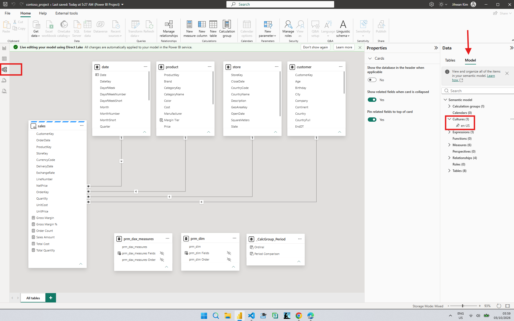
The Cultures section of the Use Model explorer in Power BI article describes this area as the place to view all translated versions of the data model.
Then I picked what to translate. I started with the sales table and two of its measures, Sales Amount and Gross Margin %.
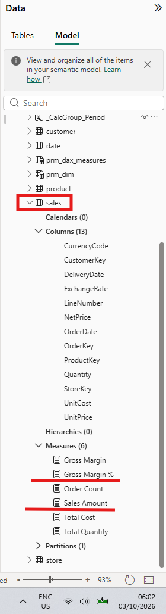
From each of the other tables I picked one column: CategoryName in product, Birthday in customer, and Month in date. With the four table names, that made nine captions, a set small enough to check by eye.
2. Writing the Korean Culture in TMDL View
Power BI Desktop has no dialog for translations. In the Common use cases for TMDL view section of the Use Tabular Model Definition Language (TMDL) view in Power BI article, the perspectives scenario ends by saying the same method works for other semantic model metadata that lack a graphical interface, such as translations. I asked AI for a starting script built from the objects I had highlighted, and pasted it into a new TMDL view tab.
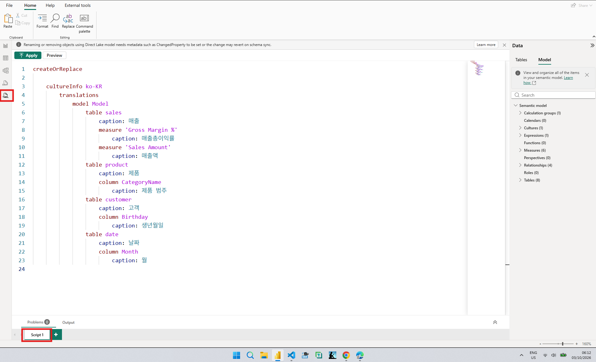
Under cultureInfo ko-KR come translations, model Model, and each table, with its measures and columns inside it, each carrying a caption. The Translations in TMDL section of the Object definitions in Tabular Model Definition Language (TMDL) article explains that TMDL replicates the model hierarchy underneath each culture, and that three properties can be translated: caption, description, and displayFolder. I only needed the first.
Its example starts with culture pt-PT. The culture already in my model is written as cultureInfo en-US, as the preview below shows, so I used cultureInfo to match, and the Problems tab stayed at 0. I did not try the other spelling, so I can only tell you which one my files use.
Before applying, I clicked Preview.
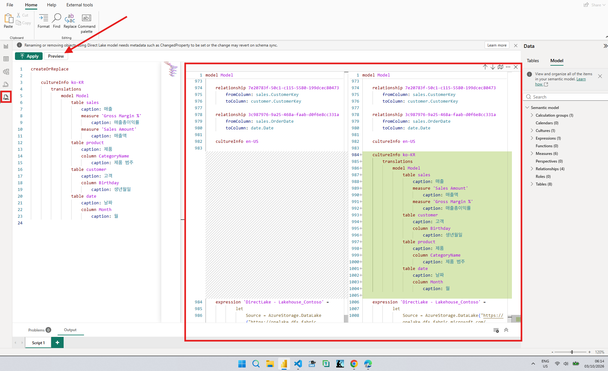
The new block landed below cultureInfo en-US, which stayed untouched. The order inside it was not mine. My script had Gross Margin % before Sales Amount and product before customer, and the preview swapped both pairs. A note in the Preview changes to the semantic model section of the Use Tabular Model Definition Language (TMDL) view in Power BI article explains why: the preview compares the model before and after the script runs, not the script itself, so objects appear in the default TMDL order.
I applied it.
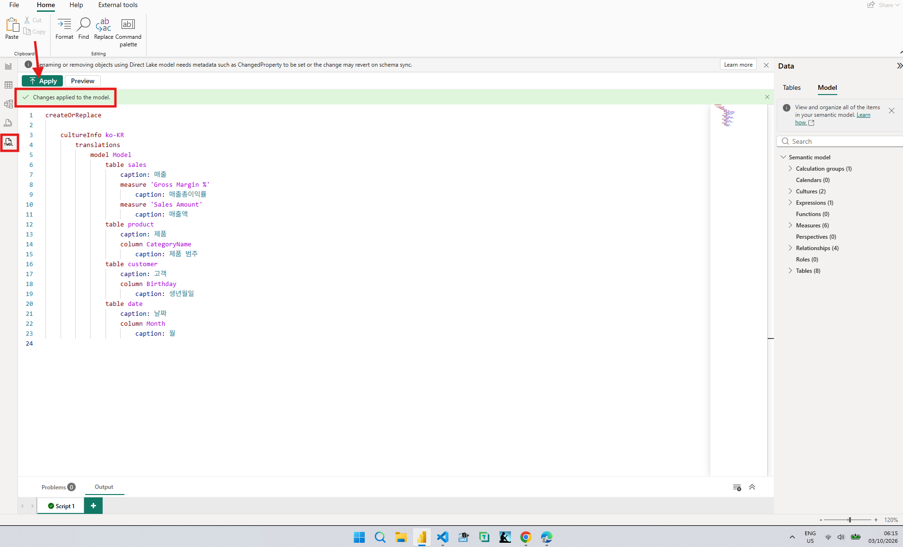
Changes applied to the model. Model explorer went from one culture to two. Then I switched to the report view to see whether Desktop would show any of it, and it did not.
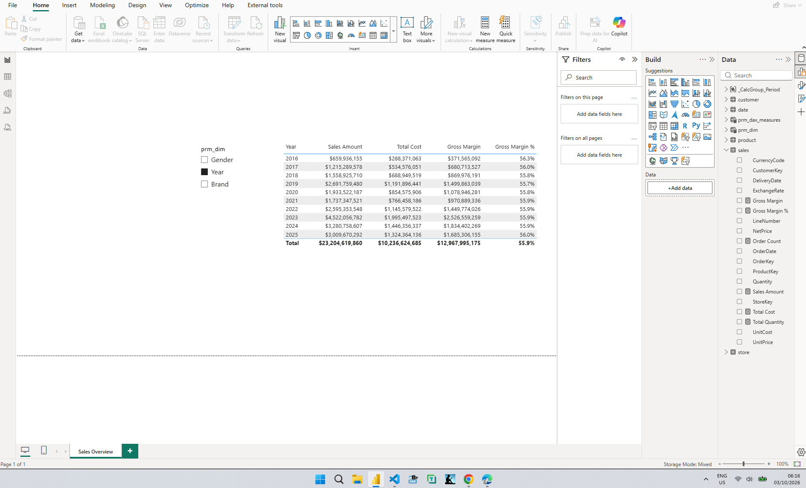
This one is documented. In the Organize project for metadata translation section of the Use Locale Values in Multiple-Language Power BI Reports article, Power BI Desktop doesn't load metadata translations in its report designer, only semantic model object names. So the screen I spend most of my day in was the one place I could not check this work.
3. Three Files in the Commit, and None of Them in the Report
Saving the project wrote the change to disk, and VS Code showed where it went.
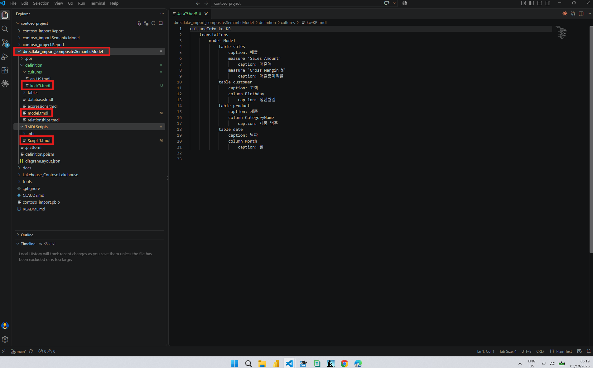
A new ko-KR.tmdl sits in the cultures folder next to en-US.tmdl, its contents in the same order the preview showed. The TMDL folder structure section of the Tabular Model Definition Language (TMDL) article lists one file for each culture linguistic schema, so a new language is a new file rather than an edit to an existing one.
The second change is one line in model.tmdl.
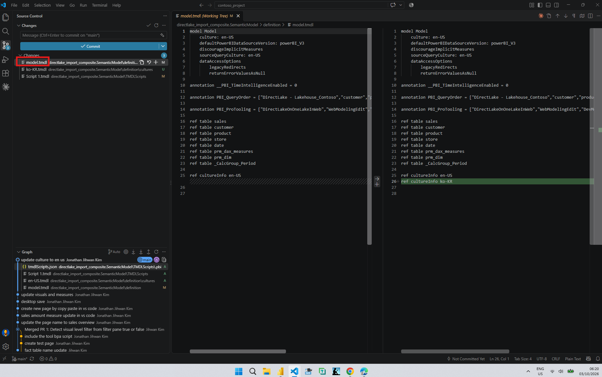
ref cultureInfo ko-KR, below the en-US one, with the model's own language, culture: en-US, still on line 2. The Deterministic collection ordering section of the Tabular Model Definition Language (TMDL) article explains that these ref lines keep the order of cultures stable between saves.
The third file is not part of the model at all.
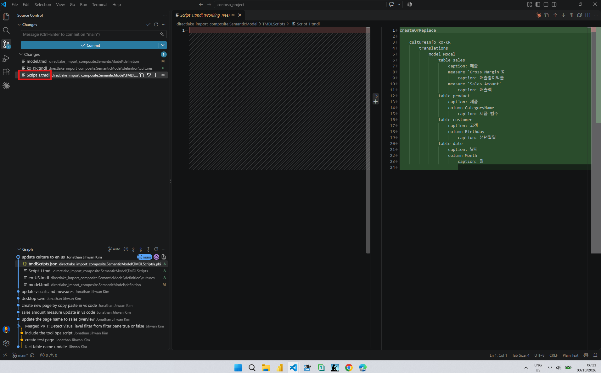
My TMDL view tab was saved as a file too. The TMDL script tabs section of the Use Tabular Model Definition Language (TMDL) view in Power BI article says that in a Power BI Project, each script tab is saved as a .tmdl file in the TMDLScripts folder, so the script I ran went into the repository next to the file it produced.
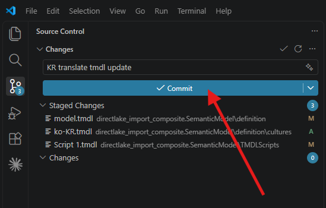
Three files, all under the semantic model folder, and not one under contoso_project.Report. The Power BI support for metadata translation section of the Plan Translation for Multiple-Language Reports in Power BI article describes a translated caption as an alternative name that appears when the report is rendered in a different language. The object keeps its own name, and the report keeps pointing at it.
One more thing, to be precise. The commit is not what put Korean into the service. The opening of the Learn About Editing Semantic Models in Direct Lake in Power BI Desktop article says there is no publish action when you live edit, because changes made in Power BI Desktop happen to the semantic model in the Fabric workspace. The captions arrived there when I clicked Apply. The commit was for my repository.
4. The Service Followed My Browser
I opened the report in the Power BI service, and it was in English.
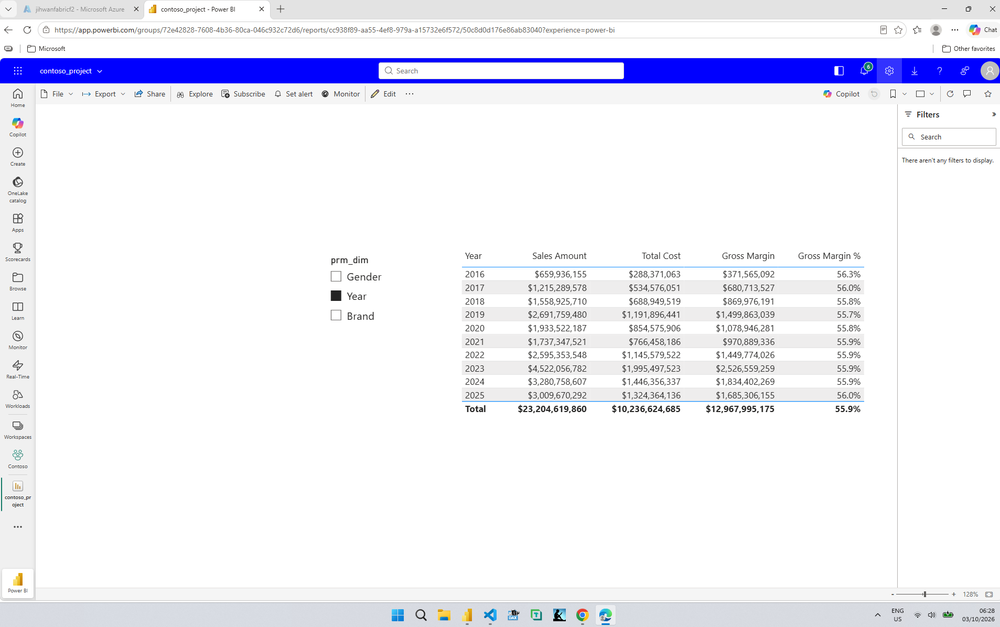
That was correct, because my browser had asked for English. In the Load a report in Power BI section of the Use Locale Values in Multiple-Language Power BI Reports article, the browser sends an Accept-Language header with a culture name, the service uses it to set the language and locale of the report, and users control that value through their regional settings. In Edge, the Preferred languages list says websites will appear in the first language in the list that they support, so I moved Korean to the top.
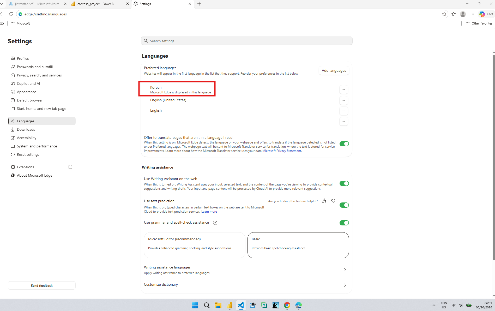
Then I reloaded the report.
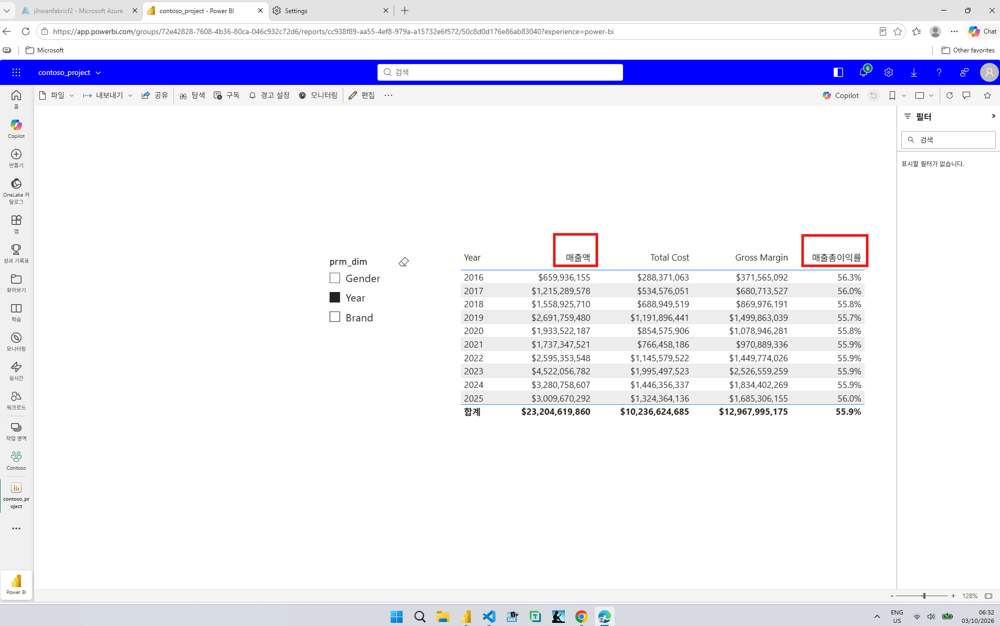
Two column headers turned Korean, exactly the two measures I had translated. Total Cost, Gross Margin, and the slicer stayed in English because they were never in my script. The menus, the Filters pane, and the Total under the last row changed as well, and those words come from Power BI, not from my model.
5. Asking AI for the Rest of the Page, and for Dutch
Nine captions were enough to learn the format. For the rest of the page I turned to Claude Code in VS Code, pointed it at my commit, and asked for every name shown on the Sales Overview page, plus a second language.
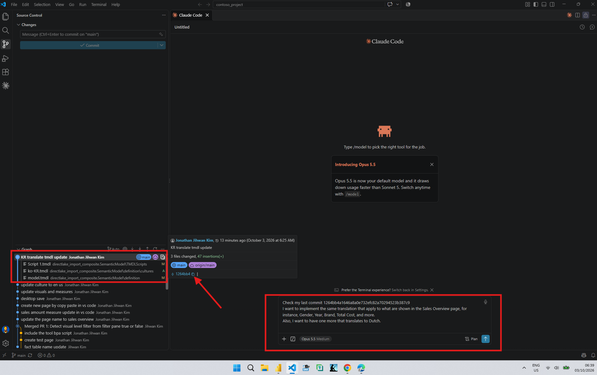
It extended the Korean file first.
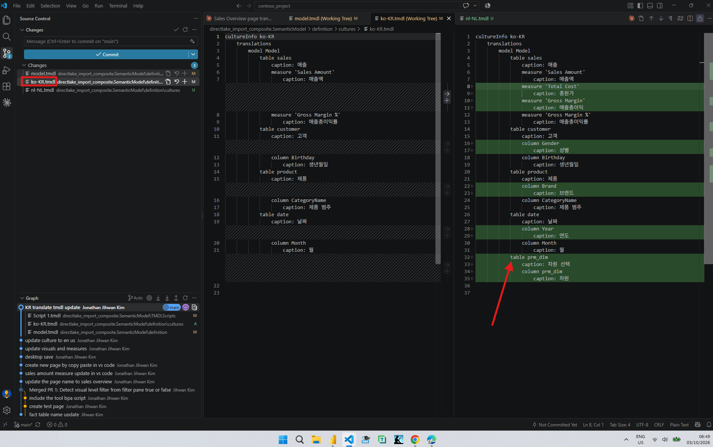
Total Cost and Gross Margin, as asked. Gender in customer, Brand in product, and Year in date, the three fields behind my slicer. And one block I had not asked for by name, for prm_dim, the field parameter table, with a caption for the table and one for its column.
That last block made me look twice. The field parameter got captions for itself, but nothing for Gender, Year, or Brand inside it. Those three were translated in their own tables instead. My guess was that the slicer would pick them up from there, and the next section is where that guess was tested.
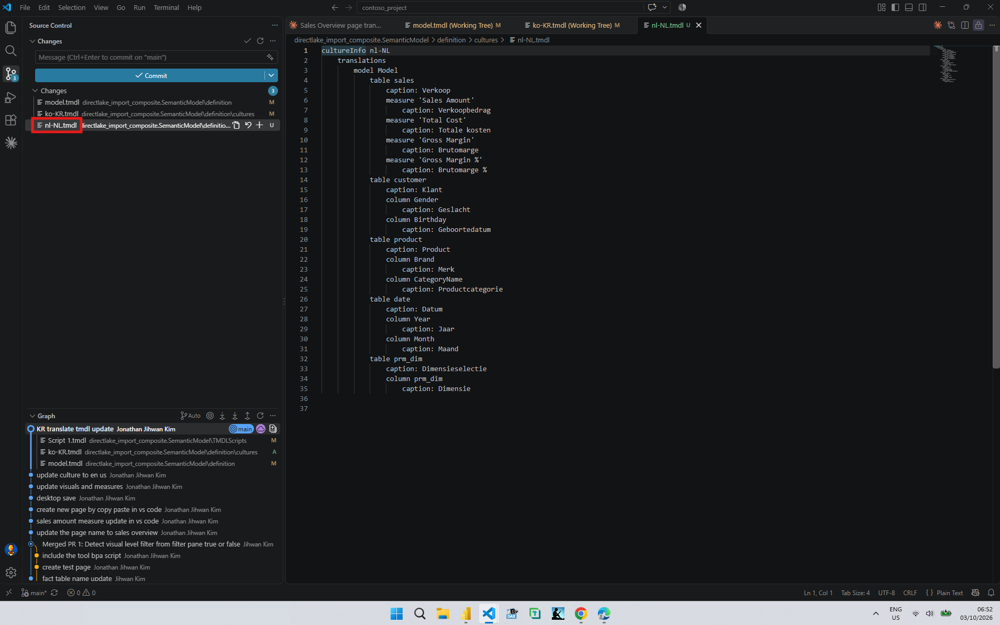
The Dutch file covers the same objects, from Verkoopbedrag for Sales Amount to Dimensie for the field parameter's column, and model.tmdl gained one more line.
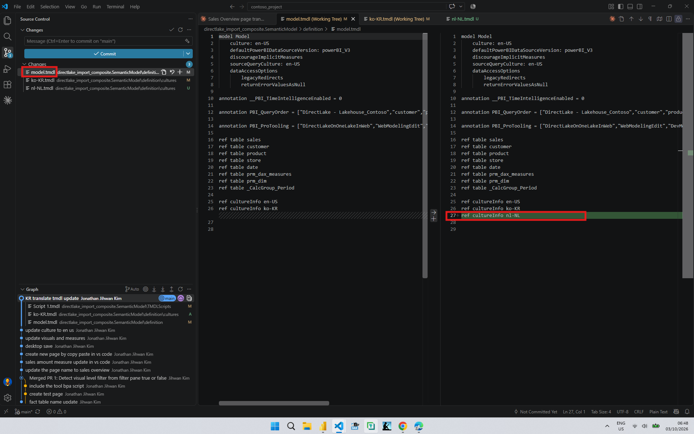
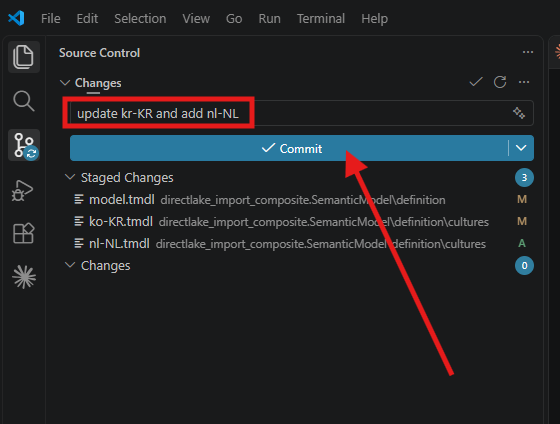
Again three files, all in the semantic model. These edits were made on disk rather than in Desktop, so they reached the workspace through Git: I pushed, then updated the workspace from Source control. The Considerations and limitations section of the Learn About Editing Semantic Models in Direct Lake in Power BI Desktop article says a Power BI Project can't be published from Power BI Desktop, and names Fabric Git integration as one way to bring local PBIP files to a workspace. For Dutch I moved Dutch to the top of the same browser list.
6. The Labels No Culture File Could Reach
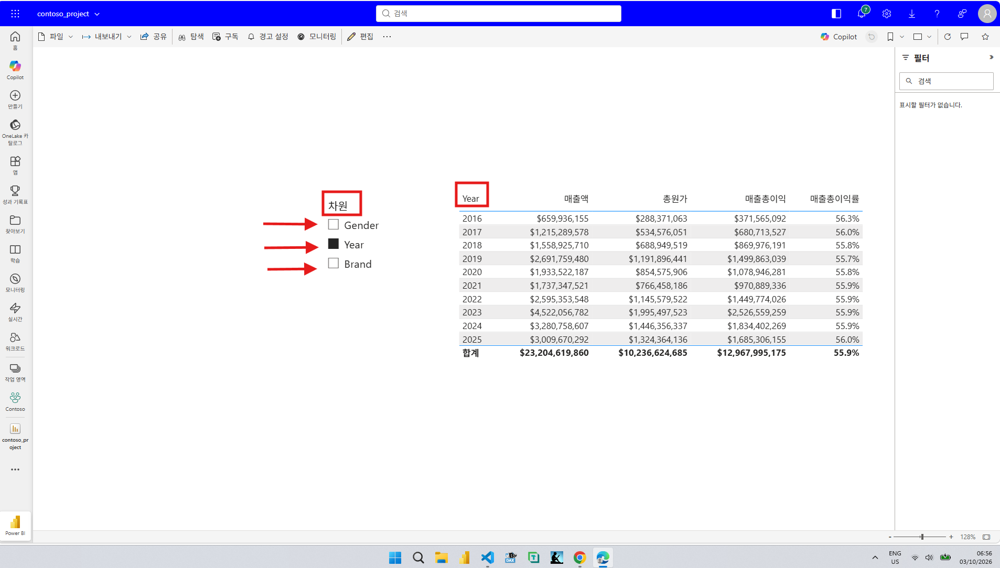
The slicer header changed. That is the caption of the field parameter's column, the one the AI added. The three items under it did not change, and neither did the Year header on the table, whose first column comes from the same field parameter. My guess was wrong.
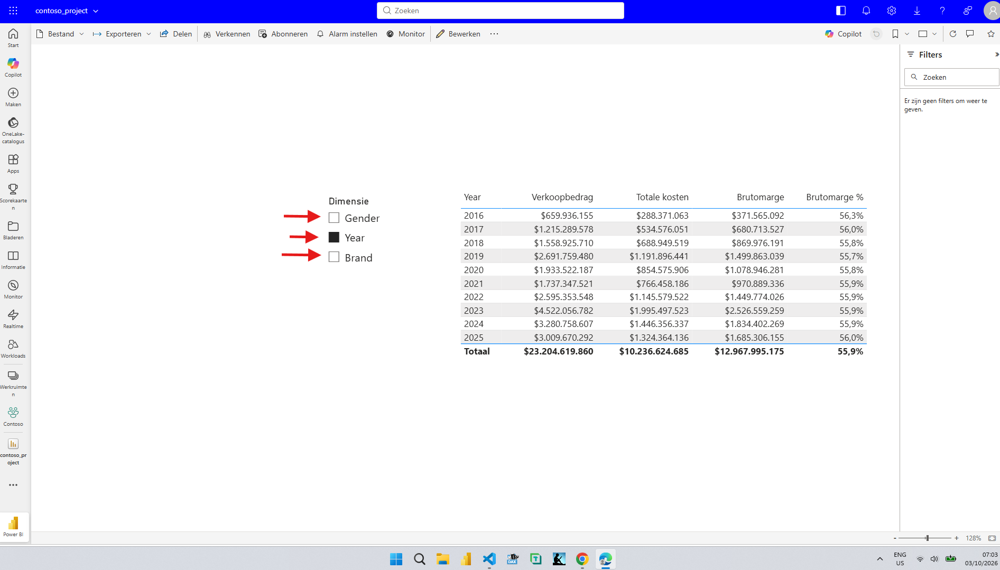
Dutch gave the same result, with one difference that needed no work from me: the number format. In the 2016 row, the English report shows $659,936,155 for Sales Amount and 56.3% for Gross Margin %. The Dutch report shows the same two values as $659.936.155 and 56,3%, with a dot to group thousands and a comma for decimals. The Format dates and numbers with current user locale section of the Use Locale Values in Multiple-Language Power BI Reports article says Power BI visuals automatically handle locale-specific formatting behind the scenes.
The reason the labels stayed in English is in the Edit translated names section of the Implement Data Translation Using Field Parameters article: when Power BI Desktop creates a field parameter, the names it shows are hard-coded into the DAX expression. Gender, Year, and Brand on my slicer are not names of anything in the model. They are three text values typed into a table.
That puts them on the other side of a line Microsoft draws between two kinds of translation. The Metadata translation section of the Plan Translation for Multiple-Language Reports in Power BI article covers tables, columns, measures, hierarchies, and hierarchy levels, and its Data translation section is about translated values for the data itself, naming field parameters as the feature that loads them. A culture file is metadata translation. My slicer needed data translation.
That answered the question I started with. A culture file translates the names in the model. A field parameter label is a value typed into DAX, and a value needs data translation.
7. Fixing the Field Parameter Together with AI, and Checking Each Part
I sent the Korean screenshot back to Claude Code with one sentence: the table name is translated, the fields inside it are not, fix it, and do the same for Dutch.
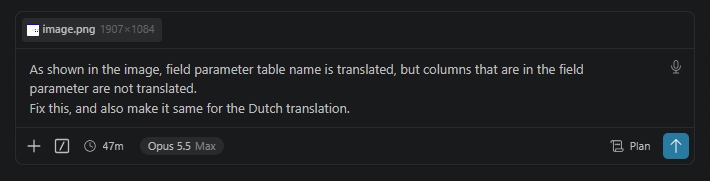
The fix went into the field parameter itself.
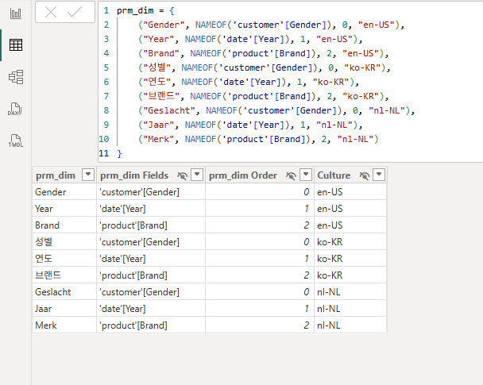
Three rows became nine. Every field now appears once per language, with its label in that language and a fourth value naming the culture, which shows up as a new hidden Culture column. To show one language at a time, the AI added a hidden measure, Culture Match. It reads the first two letters of USERCULTURE(), turns them into ko-KR, nl-NL, or by default en-US, and returns 1 when the culture on the row matches.
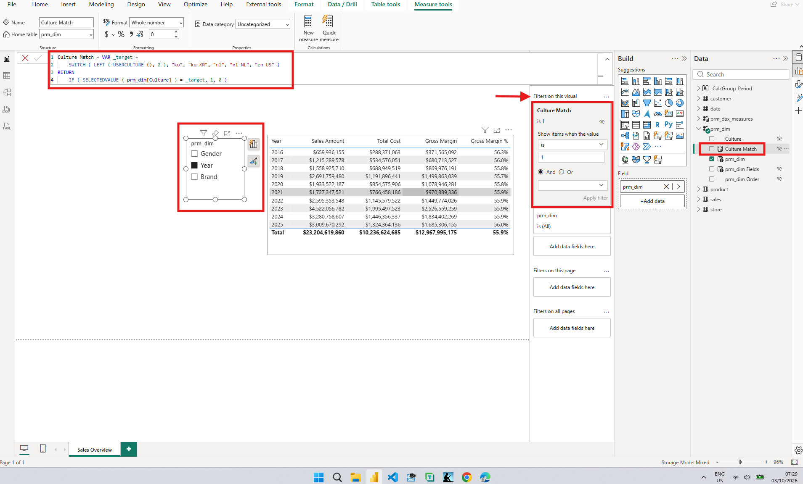
Then it wrote a visual-level filter into each of the two visuals that use the field parameter. The slicer keeps the rows where Culture Match is 1.
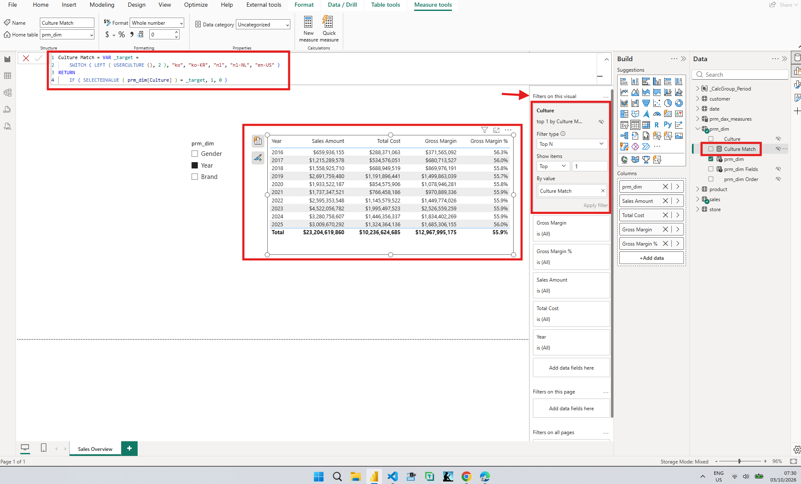
The table got a different kind of filter, a Top N on the Culture column that keeps the one value ranked highest by Culture Match. The two filters differ because the two visuals list different things. The slicer lists the field parameter's own rows, so a filter on the measure can drop the rows for the other two languages. The table lists years or brands, so the same filter would be judged once per year or brand. The language is picked on the Culture column instead, where Top N keeps one culture for the whole table.
I checked both filter cards in Desktop before I committed, and both are hidden. The Lock or hide filters section of the Format filters in Power BI reports article says consumers can't even see a hidden filter, which is what my team's rule from Checking My Team's Rules Before the Pull Request asks for. Then I committed prm_dim.tmdl and the two visual.json files, pushed, and updated the workspace from Source control, the same route as the second commit.
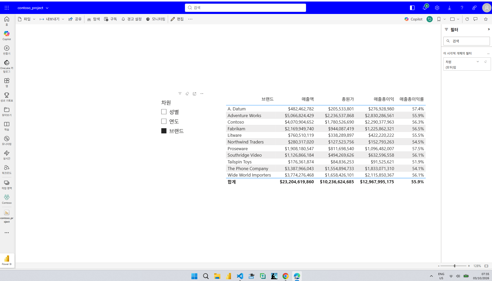
It worked in both languages. The brand names in the rows are data too, and I left them as they are, because a brand keeps its name in every language.
A result on screen was not enough for me. I wanted a documented reason for each part of the fix before I called it done, and Microsoft Learn has one for both the column and the measure.
The fourth value is a documented step. The Add a language ID column section of the Implement Data Translation Using Field Parameters article adds a fourth string to the row for each language in the field parameter's DAX to enable filtering by language, then hides the new column, since report authors never need to see a column used to select a language by filtering behind the scenes. My hidden Culture column follows that step, with full culture names such as ko-KR where the article uses two-character language identifiers such as en.
Choosing the language is where my report needed something different. In the Create a relationship section of the Add the Languages Table to Filter Field Parameters article, a Languages table is related to the field parameter, and the language is switched with a filter in the Filter pane. My captions already followed the browser, so I wanted the labels to follow it too, with nothing for the reader to pick. That is the job of Culture Match. The Remarks in the USERCULTURE function reference say that with field parameters, USERCULTURE can reliably translate dynamic titles and captions when it is used in a measure within the same model.
It had to be a measure. The Implement translations using measures and USERCULTURE section of the Use Locale Values in Multiple-Language Power BI Reports article says calculated tables are evaluated when the model loads, so in a calculated table USERCULTURE returns the culture name of the model's default language, not the reader's. prm_dim is a calculated table, which is how its partition is declared in prm_dim.tmdl, so the language check lives in the measure, and the measure reaches the two visuals through their hidden filters.
8. From a DevOps Standpoint: What a Translation Pull Request Contains
From a DevOps standpoint, this experiment changed what I look for when a translation arrives in a pull request.
Code review. Metadata translation is the easy review: one culture file and one ref line per language, all in the semantic model folder, with captions to read against object names. Data translation is a different review. The field parameter rows, the measure, and the filters have to agree with each other, and the filters live with their visuals in the report, as I wrote about in From Click-by-Click to Code. A reviewer who only opens the culture files would approve a slicer that is still in English. My team's existing check would pass the change too, because both new filters are hidden.
Version control. The script tab is committed next to its result, so my first commit holds the same nine captions twice, in Script 1.tmdl and in ko-KR.tmdl. Review the culture file. The script is only a record of what was run, and it stopped matching the model in the second commit, when the AI edited the culture file and left the script alone.
Maintenance. Another language for this page now means four edits in three files: a culture file, a ref line in model.tmdl, three rows in the field parameter, and one more pair in the SWITCH of Culture Match. The last two both land in prm_dim.tmdl, because prm_dim is the measure's home table. Miss the SWITCH and the new language quietly gets English labels, because any culture it does not list falls through to en-US.
One caution before anyone copies this. I only ever sent the service two exact culture names, ko-KR and nl-NL. The Support multiple locales for a single language section of the Use Locale Values in Multiple-Language Power BI Reports article says tables and columns need an exact match between the requested culture and a translation, while measures look for the closest one. Culture Match only reads the first two letters, so a reader asking for nl-BE would get Dutch labels from the field parameter, and I cannot tell you what the captions around them would do, because I did not test it.
A Note on Working with AI
I want to be transparent about the division of work. The first Korean script was an AI suggestion built from the objects I had highlighted, and I previewed, applied, and committed it myself. The second and third commits are Claude Code's work from the two prompts above: the extra captions, the Dutch file, the nine field parameter rows, the measure, and both filters. I read its diff in VS Code before the second commit, and I checked the measure and both filters in Desktop before the third. I pushed every commit, updated the workspace, changed the browser, and checked every result in the service, and every screenshot comes from my own session.
What made the AI's work checkable was the slow first round. I had watched nine captions go from a script to a file to a column header, so I knew what a correct culture file looked like, and I could see that the field parameter fix was a different kind of change.
Closing Thoughts
I expected a model-only change, and for two commits it was: two culture files, two ref lines, and not one report file. Then a slicer showed me that field parameter labels are not names at all, and the fix had to reach into the data and the report.
My notes from that day end with one sentence, and I still agree with it. If I am clear about the steps that make a Power BI report translate correctly in the service, and I can validate how AI fixed the field parameter table and the visuals that use it, then I can work together with AI on the rest of the job and govern the process. Section 7 is what that validation looked like for me.
There is plenty I did not test. One browser and two exact culture names. No language parameter on the report URL, which the Load a report in Power BI section of the Use Locale Values in Multiple-Language Power BI Reports article offers as a way to test without touching the browser.
The whole of it is two culture files, two ref lines, nine rows where there used to be three, one hidden column, one hidden measure, and two hidden filters.
I hope this helps having fun in exploring translations in TMDL and embracing this new era of Power BI reports that answer in the reader's language!